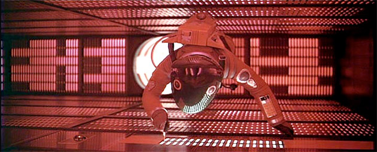
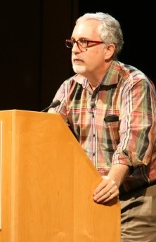
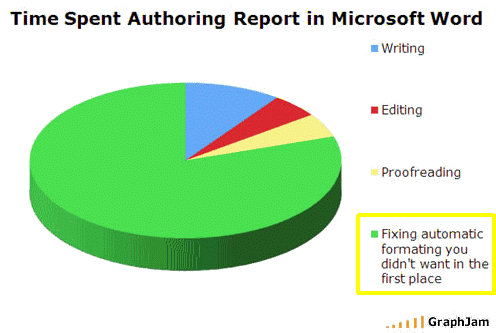
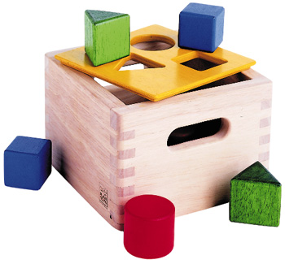

Usable por diseño
1
Juan Lanus
IxDA / TECNOSOL
"T" para ver/ocultar el texto de comentarios
Usable por diseño
Reflexiones sobre cómo hacer sistemas informáticos que los usuarios operen con eficiencia, eficacia y satisfacción. Es decir, sistemas usables para que la Empresa obtenga el máximo retorno por su inversión.
Especialmente, qué deben aportar las gerencias que no son TI para apoyar este objetivo.
Sistemas informáticos?
La mayoría de los sistemas informáticos actuales tiene forma de sitio web o aplicación web o intranet, de modo que ese tipo de aplicaciónes el foco de este presentación.
Sin embargo hay otros tipos de sistemas informáticos. Por ejemplo los tableros de operación de las grabadoras de video y sus herramientas para programarlos son proframas informáticos, famosos.
Existen además las aplicaciones de escritorio ("desktop") que se usan en las empresas, por ejemplo la que usa el cajero del banco.
Lo que se dice aquí es válido para todos los tipos de aplicaciones, aunque el émfasis está puesto en las aplicaciones web.
--
Agenda
- Identificación del problema
- Causas del problema
- Soluciones
Las tres partes de la presentación
- El primer paso es tomar conciencia de que hay un problema. La gente "normal" acepta los problemas en la interacción de las aplicaciones informáticas como una propiedad inherente a las mismas, en vez de sentir que debe reclamar un tratamiento mejor.
- El paso siguiente esboza las causas de esta situación.
- Por último hay un llamado a la acción de los que quieran cambiar el estado de las cosas en el ambiente donde pueden influír.
Fuentes adicionales
El libro "The design of everyday things" de Don Norman es ilustrativo.
El libro "The inmates are running the assylum" de Alan Cooper.
El libro "The design of everyday things" de Don Norman es ilustrativo.
El libro "The inmates are running the assylum" de Alan Cooper.
Las computadoras del 2001
En la película "2001: Odisea del Espacio" la computadora del futuro lejano (2001!) tiene un papel estelar.
Muestra qué altas estaban puestas las expectativas en 1968.
2001: A Space Odyssey (film)

http://en.wikipedia.org/wiki/2001_(film)
http://www.imdb.com/title/tt0062622/
2001: A Space Odyssey is a 1968 science fiction film directed by Stanley Kubrick and written by Kubrick and Arthur C. Clarke. The film deals with thematic elements of human evolution, technology, artificial intelligence, and extraterrestrial life, and is notable for its scientific realism, pioneering special effects, ambiguous and often surreal imagery, sound in place of traditional narrative techniques, and minimal use of dialogue.
HAL 9000, la computadora de la nave espacial Discovery One, toma control de la misión por que piensa que es demasiado importante para dejarla en manos humanas menos confiahles, y asesina a los tripulantes, todos menos uno.
Esa computadora, llamada HAL (casualmente las letras contiguas a I, B y M en el alfabeto) con pantallas planas cláramente rotuladas con la marca SONY, es la idea de lo que iban a ser las computadoras en ese futuro lejano, el año 2001.
En su momento dijeron: "Much was made by MGM's publicity department of the film's realism, claiming in a 1968 brochure that "Everything in 2001: A Space Odyssey can happen within the next three decades, and…most of the picture will happen by the beginning of the next millennium."

Acertaron en una cantidad de predicciones tecnol[ogicas pero, como se puede ver en la foto de arriba del protagonista en el interior de HAL, le erraron por mucho a lo que sería el tamaño de las computadoras.
En 1990 ya era notorio
"... the daily experience of using computers far too often is still fraught with difficulty, pain, and barriers ... "
"The lack of usability of software and the poor design of programs are the secret shame of the industry."
Mitchell Kapor en el Software Design Manifesto a 10 años de lanzada la PC.
The Sofware Design Manifesto
Kapor: "A Software Design Manifesto"
"There is a conspiracy of silence on this issue. It’s not splashed all over the front pages of the industry trade press, but we all know it’s true. Users are largely silent about this. There is no uproar, no outrage. Scratch the surface and you’ll find that people are embarrassed to say they find these devices hard to use. They think the fault is their own. So users learn a bare minimum to get by. They underuse the products we work so hard to make and so don’t help themselves or us as much as we would like. They’re afraid to try anything else. In sum, everyone I know (including me) feels the urge to throw that infuriating machine through the window at least once a week. (And now, thanks to recent advances in miniaturization, this is now possible.)"
"The lack of usability of software and the poor design of programs are the secret shame of the industry. Given a choice, no one would want it to be this way. What is to be done? Computing professionals themselves should take responsibility for creating a positive user experience. Perhaps the most important conceptual move to be taken is to recognize the critical role of design, as a counterpart to programming, in the creation of computer artifacts. And the most important social evolution within the computing professions would be to create a role for the software designer as a champion of the user experience."
Mitch Kapor bio
By capitalizing on the need for easy to use computer software and by becoming active in shaping public policies that affect acceptable use of computer systems, Mitch Kapor will go down in history as one of the more influential computer professionals of the 1980's and 90's.
Asignaturas pendientes
Word & cia. son básicamente lo mismo que cuando reemplazaron la máquina de escribir: nunca hubo un salto cuántico.
Por ejemplo no hay una forma práctica de crear colaborativamente una red de documentos.
El concepto de "documento"
Con las primeras PCs los usuarios iban de un lado al otro con "documentos" registrados en disquetes. Ahora los podemos mandar por email.
Pero hay algo que todavía persiste: el "documento" como unidad y como contenedor de solamente sí mismo.
Tendemos a hacer documentos completos, enormes a veces, por que no hay una manera simple de reusar cosas tan elementales como por ejemplo un glosario. ¿Cómo poner en un documento una referencia a un párrafo de otro? Se puede, aunque el procedimiento es incómodo, pero es frágil por que si el documento se envía entonces las referencias se pierden a menos que el receptor tenga toda la constelación de documentos y los haya almecenado de una manera que no está implícita pero es encesaria para que las referencias funcionen.
Aparece entonces otra aberración, el hecho de que todos los que están trabajando en relación con el documento deben tener copias individuales posiblemente en distintos niveles de desactualización. Y que sea tan dificultoso saber cuál ha sido la evolución del contenido.
MS Word (o cualquiera de los otros programas similares) es el mejor ejemplo de una aplicación que la gente sufre en vez de disfrutar. Hay muchos que aman el MSWord por que es lo que conocen, desde la infancia. Algo así como el síndrome de Estocolmo.
Colaboración
No hay un software efectivo para trabajar en proyectos distribuidos. No vale un repositorio compartido de documentos online, eso es patético, y podríamos haberlo tenido desde siempre.
Me refiero a una jerarquía de documentos, centralizada a nivel Empresa y también con repositorios menores para individuos. Donde no haya que hacer acciones especiales ("excise" según Alan Cooper) para trabajar. Simplemente trabajar, sin "abrir" y "cerrar" documentos.
Feature creep
MSWord es un ejemplo acabado de "feature creep", un defecto de diseño según el cual la acumulación de "features" aumenta el valor del producto final.
Los informáticos están acostumbrados a idear los programas en términos de funciones y componer esas funciones en la resolución de trabajos. A partir de esa configuración mental particular les parece que ofreciendo una paleta suficientemente abundante de funciones las personas normales van a poder actuar de manera similar.
La realidad es que a las personas que no son informáticos les resulta muy difícil pensar de esa manera y las aplicaciones diseñadas se esa manera requieren gran cantidad de soporte, formal o informal, para guiar a los que no tienen la configuración mental necesaria hacia la resolución de sus tareas.
Asignaturas pendientes

Feature creep
MSWord es un ejemplo acabado de "feature creep", un defecto de diseño según el cual la acumulación de "features" aumenta el valor del producto final.
Los informáticos están acostumbrados a idear los programas en términos de funciones y componer esas funciones en la resolución de trabajos. A partir de esa configuración mental particular les parece que ofreciendo una paleta suficientemente abundante de funciones las personas normales van a poder actuar de manera similar.
La realidad es que a las personas que no son informáticos les resulta muy difícil pensar de esa manera y las aplicaciones diseñadas se esa manera requieren gran cantidad de soporte, formal o informal, para guiar a los que no tienen la configuración mental necesaria hacia la resolución de sus tareas.
La disconformidad está en el ambiente
- --
La satisfacción del público en general es baja
El video del señor enijad[isimo que destruye una PC se propagó viralmente por la Internet por que millones de personas se sintieron representadas por el personaje.
La intención inicial del video era vender cámaras de vigilancia. Pero la empatía que despertó en la población el hecho de que el personaje reaccionara rompiendo la PC lo convirtió en un fenómeno de alcance mundial.
El personaje rompe el hardware pero todos sabemos que es inocente, que la culpa de la furia la tiene el software, sin ninguna duda.
La disconformidad en el ambiente ...
Lo relevante del video anterior no es el video en sí sino la forma en que se propagó viralmente.
Por que interpreta la frustración de la gente por las promesas incumplidas de la TI.
Siempre pasa lo mismo
Cada vez que se anuncia una nueva tecnología parace que va a resolver todos los problemas de una manera fulminante.
Con el tiempo el alboroto se diluye y la nueva tecnología comienza a abrirse paso poco a poco, como son las evoluciones humanas. Por razones técnicas, económicas, poíticas y legales, y por la capacidad limitada de los humanos, los resultados no son inmediatos ni excelentes.
Pero el caso de las computadoras es especial, por que sus promesas fueron más grandes y su evolución más frustrante.
Esto último se debe a que frecuentemente hay anuncios, generalmente tecnológicos, que generan mucha cobertura de prensa pero finalmente no se reflejan rápidamente en resultados prácticos excepto tal vez en los juegos.
Por ejemplo la arquitectura de 32 bits ya estaba presente en los procesadores Intel 80386 sin embargo los sistemas operativos tardaron muchos años en aprovecharla. Algo similar para ahora con el salto a 64 bits, que se anunció hace años pero no se propagó sino lentamente
Kapor es uno más
El su Software Design Manifesto dice "In sum, everyone I know (including me) feels the urge to throw that infuriating machine through the window at least once a week".
La disconformidad en el ambiente ...
Todo lo anterior habla de frustraciones: las promesas de las computadoras todavía no se han cumplido.
.
Etc ...
Se puede seguir, hay abundancia de ejemplos pero tiempo escaso para enumerarlos.
Que cada uno identifique las aplicaciones que le molestan y emprenda su propia lucha.
--
--
Usable por diseño
2
Juan Lanus
IxDA / TECNOSOL
Comentarios
En esta sección se intenta arrojar un poco de luz sobre el problema en sí y las causas del mismo.
No está resultando fácil
From the CHAOS Report:
| Resolution type | 1995 | 2001 | 2009 |
|---|---|---|---|
| Successful On time, on budget, fully functional |
16% | 28% | 32% |
| Challenged Late, over budget, and/or less than promised functionality |
53% | 49% | 44% |
| Failed Cancelled or never used |
31% | 28% | 24% |
Standish "The CHAOS Report"
The Standish Group International, Inc. is a market research and advisory firm specializing in mission-critical software and electronic commerce.
They don´t say what CHAOS means, but it might be "Caring, Honesty, Accountability, Ownership, and Success.
From the 1995 Chaos Report:
| Resolution type | 1995 | 2001 | 2009 |
|---|---|---|---|
| Successful (On Time, On Budget, Fully Functional) | 16.2% | 28% | 32% |
| Challenged (Late, Over Budget, And/Or Less than Promised Functionality) | 52.7% | 49% | 44% |
| Failed (Canceled or never used) | 31.1% | 28% | 24% |
The most important aspect of the research is discovering why projects fail. To do this, The Standish Group surveyed IT executive managers for their opinions about why projects succeed. The three major reasons that a project will succeed are user involvement, executive management support, and a clear statement of requirements. There are other success criteria, but with these three elements in place, the chances of success are much greater. Without them, chance of failure increases dramatically.
CASE STUDY CONCLUSIONS
The study of each project included adding up success points on the "success potential" chart.
Project Challenged Factors % of Responses:
Opinions about why projects are impaired and ultimately cancelled ranked incomplete requirements and lack of user involvement at the top of the list.
| Failure Criteria | Points | |
|---|---|---|
| Lack of User Input | 13% | |
| Incomplete Requirements & Specifications | 12% | |
| Changing Requirements & Specifications | 12% | |
| Lack of Executive Support | 8% | |
| Technology Incompetence | 7% | |
| Lack of Resources | 6% | |
| Unrealistic Expectations | 6% | |
| Unclear Objectives | 5% | |
| Unrealistic Time Frames | 4% | |
| New Technology | 4% | |
| Other | 11% | 12% |
| 67% | 33% | |
Galorath analysis shows that about 21% of a large companies IT budget is wasted due to such issues.
Why Software Fails
We waste billions of dollars each year on entirely preventable mistakes
http://www.spectrum.ieee.org/computing/software/why-software-fails/0
About "Clear Business Objectives" by Standish
ROI ACTION: Review all of the requirements for a positive ROI impact. Eliminate requirements that add little or no value to the ROI.
Work on functions and features that have the highest gain first.
Constantly review where you stand with budget versus actual expenditures.
Replace features with more valuable ones if business needs change.
Look at all ongoing and planned projects; do the ones that add value and gain first.
Para quién hacemos el software?
El target
Desarrollamos para las computadoras? Error! El taget de los desarrollos de sistemas no son las computadoras sino la gente que va a usar el sistema.
Se llama "UCD" por "User-Centered Design". Es sintomático que se deba explicitar eso cuando debería estar implícito desde siempre.
Por razones históricas del tiempo cuando las computadoras eran muy costosas se priorizaba el uso de la máquina por sobre el tiempo de la gente, había razones de costo. Eso ya no es así, desde hace muchos años, pero la formación de los informáticos no ha cambiado.
Kapor on developers
"By training and inclination, people who develop programs haven’t been oriented to design issues. ... It is simply to say that the perspective and skills that are critical to good design are typically absent from the development process, or, if present, exist only in an underground fashion. ... We need to rethink the fundamentals of how software is made."
More Than Interface Design
"Software design is not the same as user interface design."
"The overall design of a program is to be clearly distinguished from the design of its user interface. If a user interface is designed after the fact, that is like designing an automobile's dashboard after the engine, chassis, and all other components and functions are specified. The separation of the user interface from the overall design process fundamentally disenfranchises designers at the expense of programmers and relegates them to the status of second-class citizens."
"The software designer is concerned primarily with the overall conception of the product. Dan Bricklin’s invention of the electronic spreadsheet is one of the crowning achievements of software design. It is the metaphor of the spreadsheet itself, its tableau of rows and columns with their precisely interrelated labels, numbers, and formulas—rather than the user interface of VisiCalc—for which he will be remembered. The look and feel of a product is but one part of its design."
Talento
Por más que se purifiquen los procesos, para hacer algo "outstanding" siempre es necesario una couta de talento.
Los tres modelos

- Modelo conceptual
- Modelo manifiesto
- Modelo de implementación
Los tres modelos
Cuando un usuario opera un sistema hay tres modelos en juego: conceptual, implementación y manifiesto.
La fricción entre el usuario y el sistema se deben a desajustes entre estos modelos.
El modelo conceptual es la definición semántica del sistema y se debe modelar en base al modelo mental, la idea que el usuario tiene sobre la semántica del sistema.
El modelo manifiesto es básicamente la UI, la interfase que el sistema publica hacia el usuario. Para el usuario la interfase es el sistema.
El modelo de implementación es la forma en que el sistema está implementado en la computadora incluyendo las tecnologías participantes, y en principio no produce fricción, el implementador es libre de hacer la implementación que más le conviene y eventualmente de cambiarla sin alterar el modelo manifiesto.
Un típico defecto de diseño que suelen cometer los informáticos es "publicar el modelo de implementación", es decir, diseñar el modelo manifiesto a aprtir del modelo de implementación. Por ejemplo si el modelo de implementacíon tiene uan abse de datos con tablas para representar diversas entidades, el modelo manifiesto ofrece una interfase para actualizar cada una de las tablas participantes.
La fricción
La fricción se produce cuando el modelo manifiesto no acopla bien con el modelo mental del usuario, o sea cuando el modelo conceptual es defectuoso.
El usuario trata de hacer funcioar el sistema según sus conocimientos históricos pero el sistema se niega a reaccionar adecuadamente por que espera otras acciones. Al usuario le parece que el sistema "no anda", "no entiende", o "es incomprensible". Pocos usuarios investigan hasta hallar la manera de hacer funcionar el sistema y ganan prestigio, más prestigio cuanto más ininteligible era el sistema. En diseñador del sistema no pierde prestigio, posiblemente su empresa gana mucho dinero vendiendo soporte técnico.
Cuando el soporte técnico no se puede cobrar entonces se convierte en un costo recurrente. Un costo que se habría ahorrado diseñando el modelo manifiesto en sintonía con el modelo mental de los usuarios.
Hay más costos. Al soporte técnico se suna la pérdida de ventas por propaganda negativa de los usuarios: "para usarlo tenés que saber muchísimo!". Si el sistema es para uso interno entonces el costo adicional es el salario del personal involucrado por la cantidad de tiempo adicional requerido para operar una UI más ininteligible, tanto del operador como del emplado amigo que está tratando de ayudarlo.
Gmail
La aparición de Gmail en el mercado hizo que cambiáramos el modelo conceptual de las dos clases de email: en nuestra PC en casa o en la web. Ahora tenemos solo email.
Standish: requirements!
| Failure Criteria | Points | |
|---|---|---|
| Lack of User Input | 13 | |
| Incomplete Requirements & Specifications | 12 | |
| Changing Requirements & Specifications | 12 | |
| Lack of Executive Support | 8 | |
| Technology Incompetence | 7 | |
| Lack of Resources | 6 | |
| Unrealistic Expectations | 6 | |
| Unclear Objectives | 5 | |
| Unrealistic Time Frames | 4 | |
| New Technology | 4 | |
| Other | 11 | 12 |
| TOTALES | 67% | 32% |
Impacto del análisis funcional en los fracasos
En la tabla de factores de fracaso separé en dos columnas los porcentajes.
En la primera columna están agrupados más o menos arbitrariamente los números relacionados con las especificaciones.
Los primeros cuatro están íntimamente relacionados. Por ejemplo el tercero, requerimientos cambiantes, simplemente refleja el hecho de que los requerimientos no fueron relevados adecuadamente, o que el usuario no los validó fehacientemente, o normalmente ambos. La falta de soporte de los ejecutivos tiende a ocurrir más fácilmente cuando dejan caer un proyecto por que intuyen que no está alineado con una necesidad concreta, es decir, que va a fracasar.
Hay una equiparación entre "fracaso (total o parcial) del proyecto" y defectos en la UI por que si el porcentaje de features descartadas se aplicara por igual a la funcionalidad "interna" y a la funcionalidad de la UI ésta se vería afectada en una proporción significativa. La realidad es que la UI es lo que más sufre recortes cuando un proyecto entra en estado de recortes por exceder presupuesto o tiempo o ambos.
Fixing the Software Requirements Mess
http://www.cio.com/article/14295/Fixing_the_Software_Requirements_Mess_
Este artículo menciona el impacto de los requerimientos en el fracaso de los proyectos en el orden del 71%.
Study: Bad Requirements-Gathering Hurts IT Projects
http://www.cio.com/article/182300/Study_Bad_Requirements_Gathering_Hurts_IT_Projects
http://www.iag.biz/images/resources/iag%20business%20analysis%20benchmark%20-%20full%20report.pdf
"A new survey by IAG Consulting finds that among two-thirds of companies polled, it is "improbable" that an IT project will be considered an overall success, due to inadequately or improperly gathered business requirements."
"One big reason that really stands out for me is that people tend to look at requirements as a document, not as a process. If you do that you're going to fail," Ellis said. "Here's one of those cases where the means is as or more important as the end."
"The damage was worst when non-IT business analysts were in charge of the requirements. Those projects came in at nearly double their budgets and took more than 245 percent of their allotted time, according to IAG."
"The best results came when business and IT worked together on defining requirements. There, budgets ran an average of 143 percent and time, 159 percent."
"The report finds 2 basic scenarios for companies:
- Scenario 1 (68% of companies): project success is ‘Improbable’: Projects might succeed – but not by design. Based on the competencies present, these companies are statistically unlikely to have a successful project. 68% of companies fit this scenario.
- Scenario 2 (32% of companies): project success is ‘Probable’: Companies that can expect to have successful projects, by design, due to the investments that they have made in Business requirements process. 32% of companies fit this scenario.
Organizations recognize that requirements are important to project success, yet 68% did not take effective action on strategic projects.
The following are a few key findings in the study:
- Companies with poor business analysis capability will have three times as many project failures as successes.
- 68% of companies are more likely to have a marginal project or outright failure
than a success due to the way they approach business analysis. In fact, 50% of this
group’s projects were “runaways” which had any 2 of:
- Taking over 180% of target time to deliver
- Consuming in excess of 160% of estimated budget
- Delivering under 70% of the target required functionality
- Companies pay a premium of as much as 60% on time and budget when they use poor requirements practices on their projects.
- Over 40% of the IT development budget for software, staff and external professional services will be consumed by poor requirements at the average company using average analysts versus the optimal organization.
- The vast majority of projects surveyed did not utilize sufficient business analysis skill to consistently bring projects in on time and budget. The level of competency required is higher than that employed within projects for 70% of the companies surveyed.
Overall, the vast majority of companies are poor at both establishing business requirements, and delivering on-time, on-budget performance of IT projects. Satisfaction with IT and technology projects wanes significantly as the quality of requirements elicitation drops.
...
For companies that have made the leap to the use of elite facilitation skills and solid process in requirements discovery there are significant benefits. Not only were these projects rarely unsuccessful, these projects are delivered with far fewer budget overruns and in far less time.
Years of sub-optimal performance – experiencing significantly higher cost to produce applications, longer wait times for implementation, and poorer achievement of strategic project objectives – is debilitating to organizations. Quite simply, capital investment in technology at companies with poor requirements process is inefficient."
Five Things IT Managers Should Know About Software Requirements
http://www.cio.com/article/29903/Five_Things_IT_Managers_Should_Know_About_Software_Requirements
[OT] Gartner: TOC comparison of PCs with Server Based Computing
http://www.cio.com/documents/whitepapers/TCOcomparisonGartnerResearch.pdf
FBI's $170M Virtual Case File
In a devastating 81-page audit, released in 2005, Glenn A. Fine, the U.S. Department of Justice's inspector general, described eight factors that contributed to the VCF's failure.
Among them: poorly defined and slowly evolving design requirements ...
Who Killed the Virtual Case File?
http://www.spectrum.ieee.org/computing/software/who-killed-the-virtual-case-file/0
The Long, Dismal History of Software Project Failure
http://www.codinghorror.com/blog/archives/000588.html
Business Process Management (BPM) is a management approach focused on aligning all aspects of an organization with the wants and needs of clients.
Usable por diseño
3
Juan Lanus
IxDA / TECNOSOL
Factores de éxito
| Success Criteria | Points | |
|---|---|---|
| User Involvement | 19 | |
| Executive Management Support | 16 | |
| Clear Statement of Requirements | 15 | |
| Proper Planning | 11 | |
| Realistic Expectations | 10 | |
| Smaller Project Milestones | 9 | |
| Competent Staff | 8 | |
| Ownership | 6 | |
| Clear Vision & Objectives | 3 | |
| Hard-Working, Focused Staff | 3 | |
| 69% | 31% | |
Factores de éxito
En los CHAOS Reports de Standish, la tabla de factores de éxito es la contrapartida de la de factores de fracaso. Obtienen la información preguntándo a los gerentes de los proyectos exitosos a qué atribuyen el éxito.
Los porcentajes están separados en dos columnas. La primera tiene los números relacionados con los usuarios y la segunda los que son más propios del área de TI.
Se observa que el peso porcentual de la primera columna es más del doble que el de la segunda.
En términos generales los factores de la primera columna son distintas vistas de lo mismo: la claridad del modelo conceptual (Clear Statement of Requirements) hace que los usuarios y sus managers se involucren (User Involvement y Executive Management Support) por que visualizan un proyecto que refleja sus necesidades reales (Realistic Expectations y Clear Vision & Objectives) y siemtes que les pertenece (Ownership).
Se en un proyecto no hay requerimientos claros entonces todos los otros factores se resienten. Por ejemplo el apoyo de las gerencias se diluye si no está claro el objetivo final.
Cómo se implementa la colaboración?
Requerimientos!
Son el contrato entre el sponsor y los desarrolladores.
Son la definición de lo que el sistema debe hacer.
Requerimiento (sistemas)
http://es.wikipedia.org/wiki/Requerimiento_(sistemas)
En la ingeniería de sistemas, un requerimiento es una necesidad documentada sobre el contenido, forma o funcionalidad de un producto o servicio. Se usa en un sentido formal en la ingeniería de sistemas o la ingeniería de software.
Requerimientos
La interacción de los usuarios de sistemas con el área de TI pivota sobre los documentos de "requerimientos".
- No aprobar a libro cerrado
- Participar en la elaboración
- Facilitar tiempo de las personas involucradas
Requerimientos
Son el contrato entre el sponsor y los desarrolladores.
Usualmente son escritos por uno de TI trabajando de "analista funcional".
El resultado final de lo que se desarrolle depende muchísimo de la calidad de los requerimientos, es decir, en la escritura de requerimientos se concentrs una parte importante de los riesgos del proyecto.
Se puede minimizar esos riesgos atácandolos en dos frentes: uno, asignando un analista funcional de calidad, y dos, validando permanentemente su trabajo.
Mi recomendación es concentrarse en el frente "dos", la validación de los requerimientos hasta el punto en que los usuarios los leen y entienden que eso que están leyendo expresa cláramente en trabajo que quieren que el sistema ayude a hacer.
Es muy importante que los requerimientos espresen qur hay que hacer, y no cómo hay que hacerlo.
Gathering requirements or taking orders?
http://advice.cio.com/michael_kavis/gathering_requirements_or_taking_orders
You send your folks out to the user community to gather requirements. A few weeks later you get a document with pages of requirements on what the five new reports should look like and what the business rules are for these reports. What just happened? We just took an order from the business. The business just designed our system.
What should have happened? We should have identified the business problem and supplied it to the development team to recommend potential solutions. Maybe creating five new reports is not the right answer. What business problem are they trying to solve by creating more reports that business people have to thumb through on a regular basis?
El libro bueno
Software Requirements, Second Edition
by Karl E. Wiegers ISBN:0735618798
Microsoft Press © 2003 (516 pages)
This resource shows you how to define and get more out of software requirements with dozens of "best practices" and tips on getting better design input from your customers and then using these requirements to generate a variety of design documents.
Casos de uso
Expresan la funcionalidad del sistema.
Son el puente entre dos culturas, la de los informáticos y la de los usuarios.
Casos de uso
La escritura de casos de uso es posiblemente la actividad de desarrollo que más impacto tiene en el producto final.
Es la bisagra entre los dos mundos, el de la gente de TI y el del resto de las personas.
Los casos de uso no deben ser escritos como documentación para expertos de la TI. Se debe usar el lenguaje del dominio, de modo que los puedan estudiar y discutor los usuarios.
Deben relevarse especialmente en el nivel de los usuarios que hacen las tareas, no solamente en el nivel genrecial. Y estos usuarios deben ser un factor significativo en la aprobación de la funcionalidad que los casos de uso espresan.
El relevamiento en los niveles de management expresa qué es lo que se quiere lograr como un objetivo más global, mientras que el relevamiento en los niveles operativos expresa cómo se hacen las cosas, que es el objetivo de los casos de uso.
El libro de Alistair Cockburn
"Alistair Cockburn's Writing Effective Use Cases is an approachable, informative, and very intelligent treatment of an essential topic of software design. "Use cases" describe how "actors" interact with computer systems and are essential to software-modeling requirements. For anyone who designs software, this title offers some real insight into writing use cases that are clear and correct and lead to better and less costly software."
"The focus of this text is on use cases that are written, as opposed to modeled in UML. This book may change your mind about the advantages of writing step-by-step descriptions of the way users (or actors) interact with systems. Besides being an exceptionally clear writer, the author has plenty to say about what works and what doesn't when it comes to creating use cases. There are several standout bits of expertise on display here, including excellent techniques for finding the right "scope" for use cases. (The book uses a color scheme in which blue indicates a sea-level use case that's just right, while higher-level use cases are white, and overly detailed ones are indigo. Cockburn also provides notational symbols to document these levels of detail within a design.)"
Cómo debe ser un caso de uso
- Un documento textual (no un diagrama)
- Escrito en el lenguaje del dominio
- Expresando la funcionalidad de una operación
- Presentando la función como una caja negra
- Excluyendo mencionar detalles de la interfase
Más características
En el libro de Cockburn hay una lista de características recomendadas para los UCs.
En síntesis
- Gran parte del software existente no es lo ideal
- por el desajuste entre el modelo mental de los usuarios y el modelo manifiesto
- debido a baja participación de las gerencias consumidoras de esos sistemas
- lo cual erosiona el ROI de la Empresa.
--
--
Esta presentación ...
Esta y todas nuestras presentaciones se pueden encontrar en el sitio de IxDA Buenos Aires:
--
--